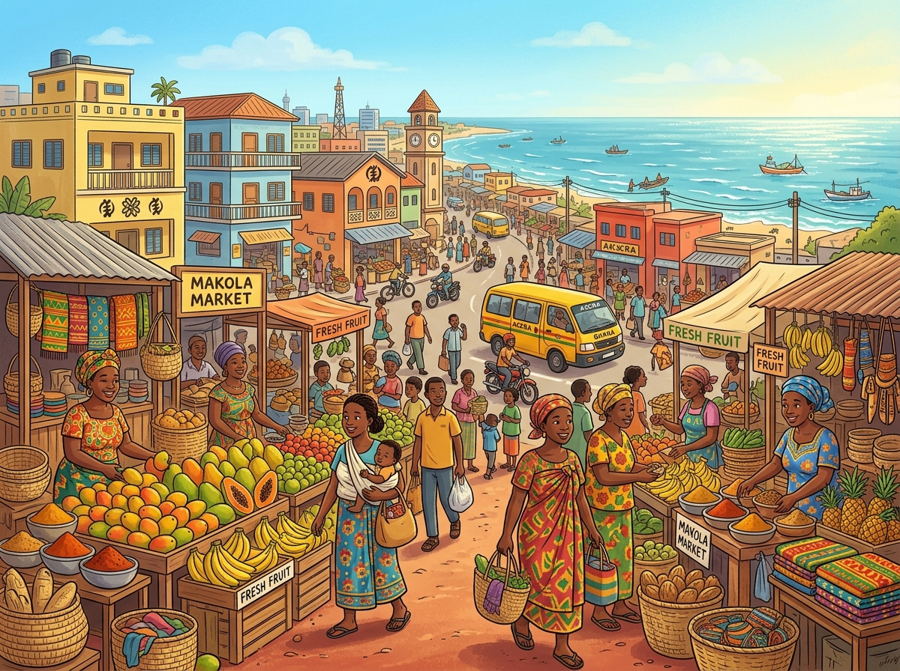
Hier stehen die wichtigsten Daten zu deinem Land. In der App baust du daraus deinen eigenen Steckbrief.
| Hauptstadt | Accra |
| Kontinent | Afrika |
| Sprache | Englisch und viele eigene Sprachen |
| Währung | Ghanaischer Cedi |
| Einwohner | etwa 35 Millionen Menschen |
| Fläche | rund 239.000 km² (etwa so groß wie Großbritannien) |
| Großer Berg | Mount Afadjato, rund 880 m (der höchste Berg des Landes) |
| Nachbarländer | Elfenbeinküste, Burkina Faso und Togo |
In Ghana gibt es viele berühmte Orte. Diese vier solltest du kennen.
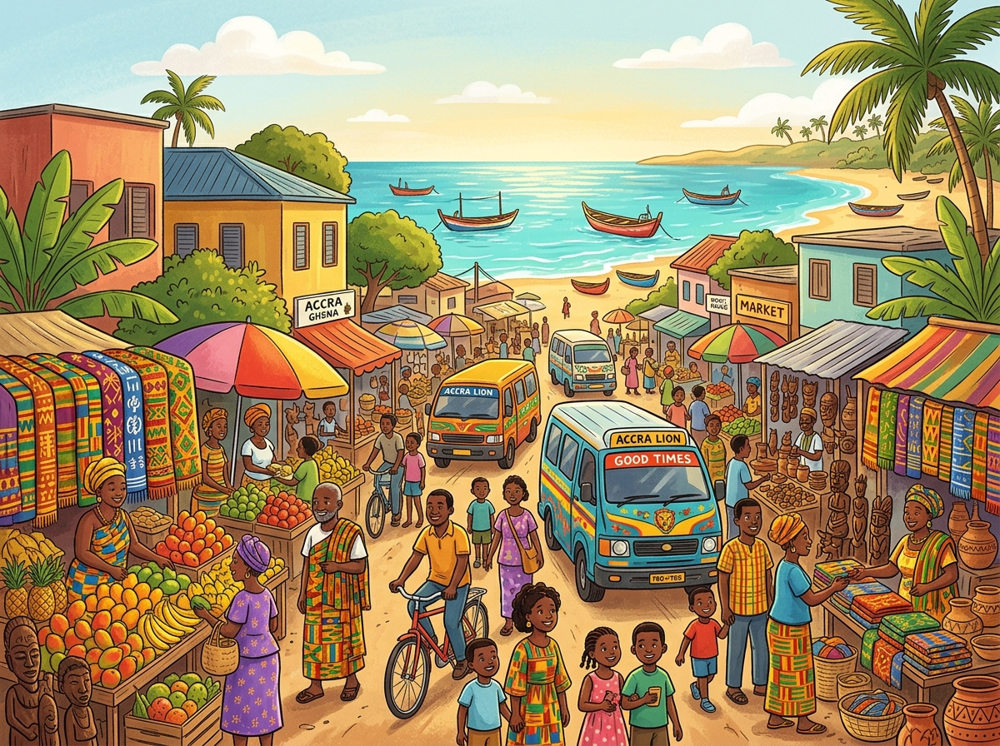
AccraAccra ist die Hauptstadt von Ghana. Die große Stadt liegt direkt am Meer. Auf bunten Märkten wird viel verkauft. Überall fahren Autos und kleine Busse. In Accra wohnen sehr viele Menschen.
Grüne Wörter für die AppAccraHauptstadtam MeerMärktenBusse
Der Kakum-NationalparkDer Kakum-Nationalpark ist ein großer Regenwald. Hoch oben hängen Hängebrücken zwischen den Bäumen. Auf diesem Weg läuft man durch die Baumwipfel. Im Wald leben Affen und bunte Vögel. Manchmal sieht man sogar Waldelefanten.
Grüne Wörter für die AppKakum-NationalparkRegenwaldHängebrückenBaumwipfelWaldelefanten
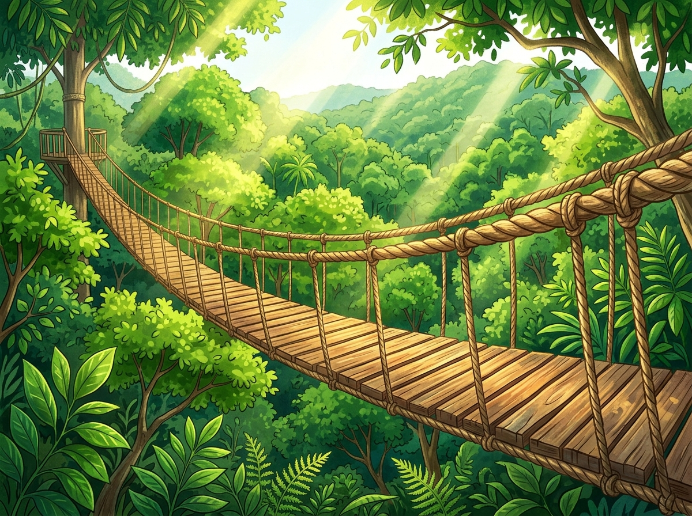
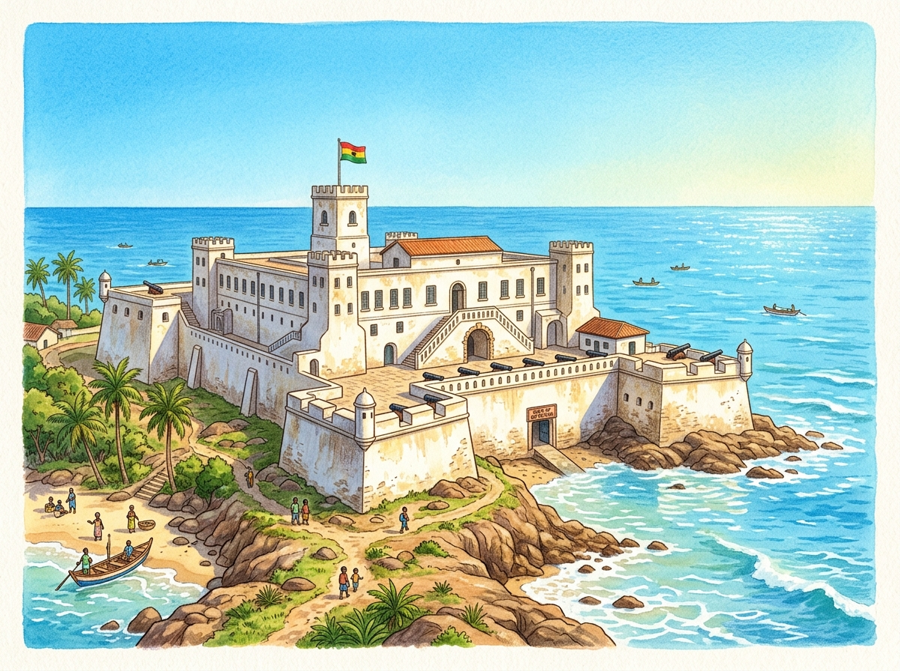
Cape Coast CastleCape Coast Castle ist eine alte Burg am Meer. Sie wurde vor langer Zeit aus weißem Stein gebaut. Von ihren Mauern blickt man auf das Wasser. Hier kann man viel über die Geschichte lernen. Viele Menschen besuchen die Burg.
Grüne Wörter für die AppCape Coast Castlealte Burgweißem SteinMauernGeschichte
Der Volta-SeeDer Volta-See ist ein riesiger See. Menschen haben ihn vor langer Zeit angelegt. Er ist einer der größten Stauseen der Welt. Auf dem Wasser fahren Boote und Fähren. Fischer fangen hier viele Fische.
Grüne Wörter für die AppVolta-Seeriesiger SeeangelegtStauseenFischer
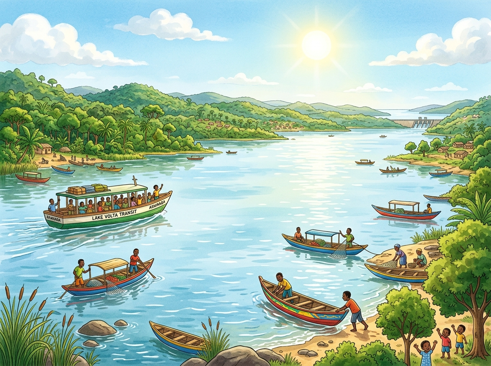
Diese Tiere leben in Ghana und sind ganz besonders.
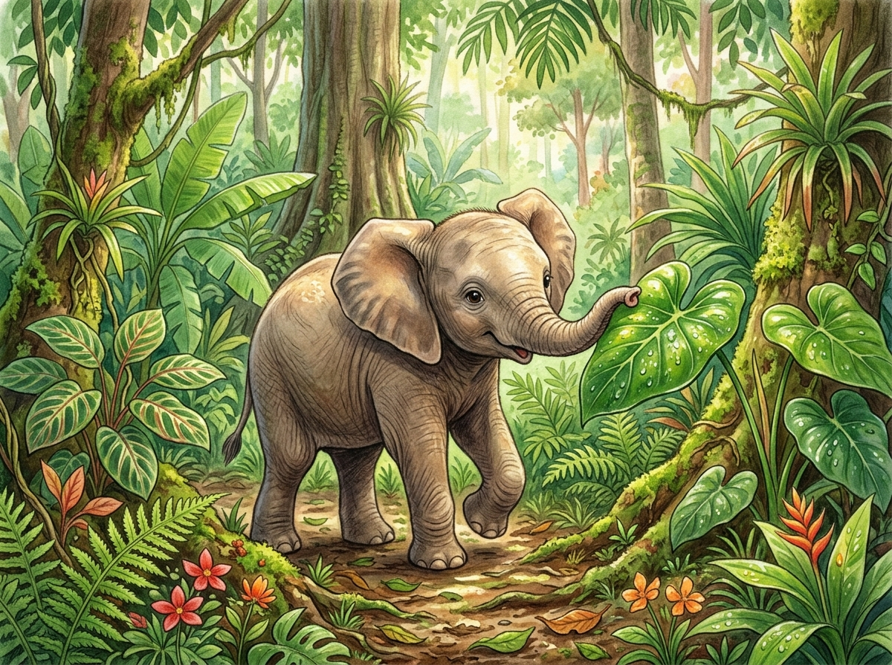
Der WaldelefantIm Regenwald von Ghana leben Waldelefanten. Sie sind kleiner als andere Elefanten. Mit dem Rüssel greifen sie nach Blättern. In kleinen Gruppen ziehen sie durch den Wald. Waldelefanten sind selten geworden.
Grüne Wörter für die AppWaldelefantenRegenwaldRüsselGruppenselten
Die MeerkatzeDie Meerkatze ist ein kleiner Affe. Sie klettert flink durch die hohen Bäume. Mit langen Armen springt sie von Ast zu Ast. Meerkatzen fressen Früchte und Blätter. In Gruppen leben sie im Wald.
Grüne Wörter für die AppMeerkatzeAffeklettertvon Ast zu AstFrüchte
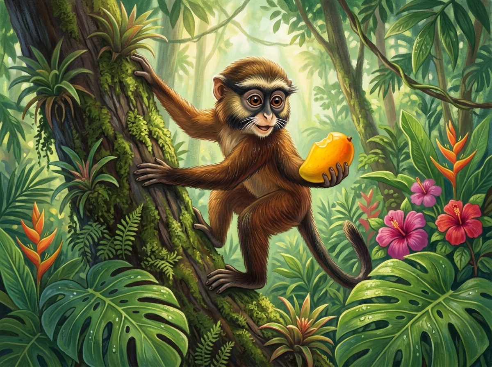
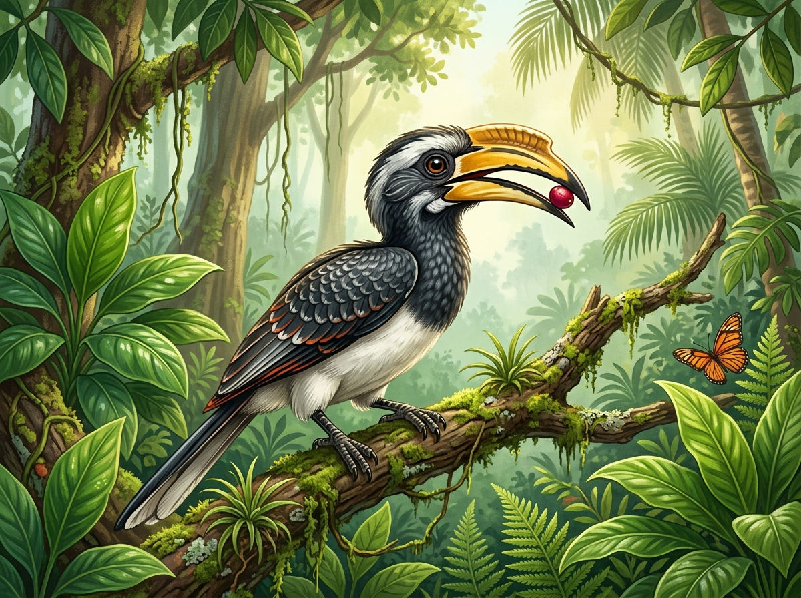
Der NashornvogelDer Nashornvogel hat einen großen Schnabel. Auf dem Schnabel sitzt ein dicker Aufsatz. Damit pflückt er Früchte von den Bäumen. Beim Fliegen rauschen seine Flügel laut. Im Regenwald hört man ihn schon von weitem.
Grüne Wörter für die AppNashornvogelgroßen SchnabelAufsatzFrüchteFlügel
In der App kannst du beim Essen das Foto nehmen oder dein Gericht selbst malen.
Jollof-ReisJollof-Reis ist ein beliebtes Gericht in Ghana. Der Reis wird in roter Tomatensauce gekocht. Dazu kommen viele Gewürze. Oft isst man Hühnchen oder Fisch dazu. Bei Festen gibt es fast immer Jollof-Reis.
Grüne Wörter für die AppJollof-ReisReisTomatensauceGewürzeFesten
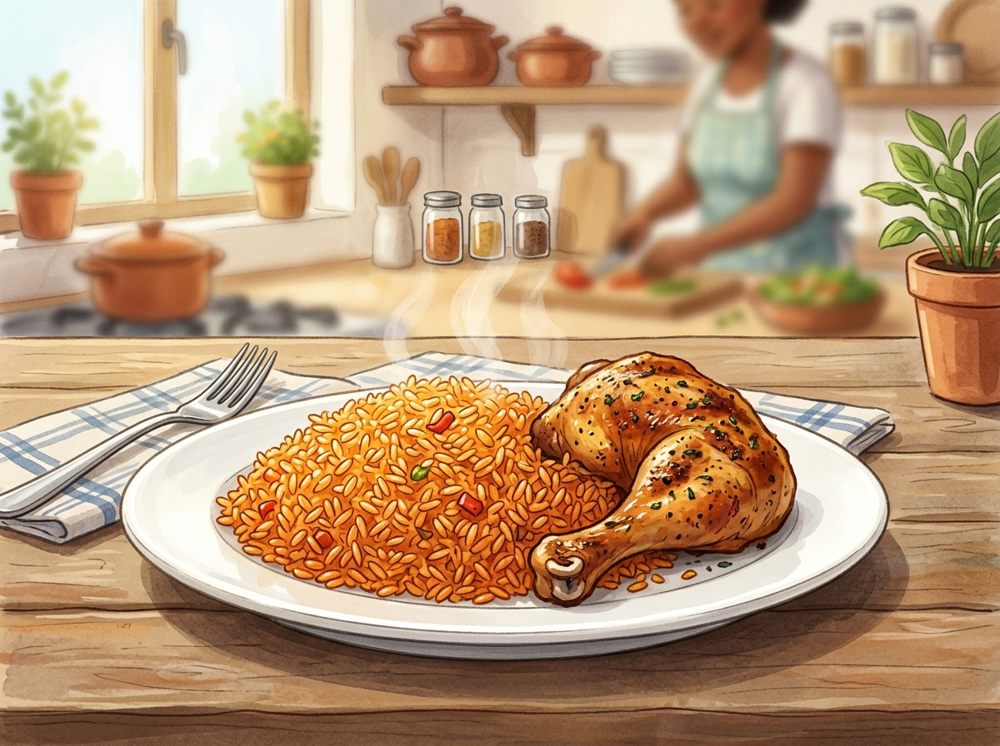
FufuFufu ist ein weicher Kloß. Er wird aus Maniok und Kochbananen gestampft. Dazu gibt es eine kräftige Suppe. Mit den Fingern formt man kleine Stücke. Fufu ist ein Lieblingsessen in Ghana.
Grüne Wörter für die AppFufuKloßManiok und KochbananenSuppeFingern
KeleweleKelewele sind kleine Stücke aus Kochbanane. Sie werden mit Gewürzen scharf gemacht. Dann brät man sie in heißem Öl. Außen sind sie knusprig und innen weich. Viele Kinder kaufen sie als Snack.
Grüne Wörter für die AppKeleweleKochbananescharfknusprigSnack
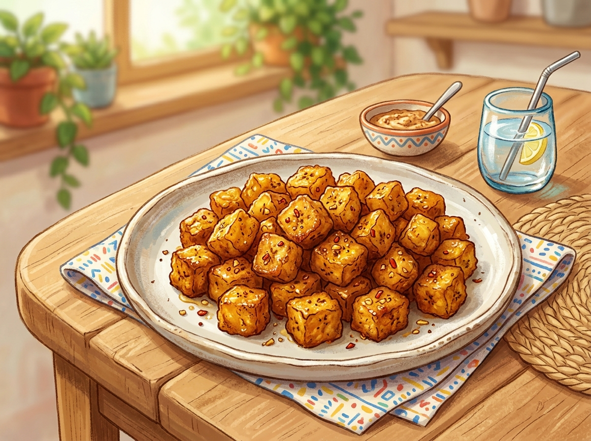
Die Nationalmannschaft von Ghana heißt die Black Stars. Das bedeutet die schwarzen Sterne. Ghana hat sich für die WM 2026 qualifiziert. Ein bekannter Spieler ist Iñaki Williams. Er spielt bei Athletic Bilbao in Spanien.
Grüne Wörter für die Appdie Black Starsschwarzen SterneWM 2026Iñaki WilliamsAthletic Bilbao
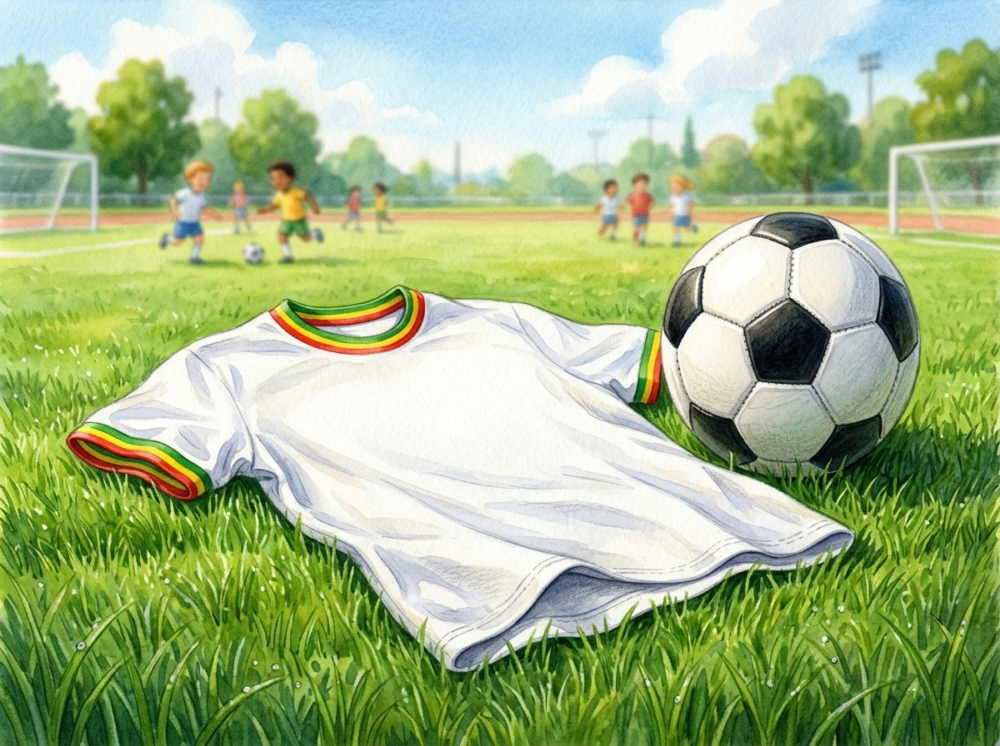
In der SchuleDie Kinder in Ghana tragen oft eine Schuluniform. In der Schule lernen sie auf Englisch. Daneben sprechen sie zu Hause eigene Sprachen. Viele Kinder helfen danach der Familie. In der Pause spielen sie zusammen.
Grüne Wörter für die AppSchuluniformEnglischeigene Sprachenhelfenspielen sie zusammen
Feste und StoffeIn Ghana werden bunte Stoffe gewebt. Der berühmte Stoff heißt Kente. Zu Festen tragen die Menschen schöne Kleider. Es wird mit Trommeln und Tanz gefeiert. Fußball spielen die Kinder am liebsten.
Grüne Wörter für die AppStoffeKenteFestenTrommeln und TanzFußball
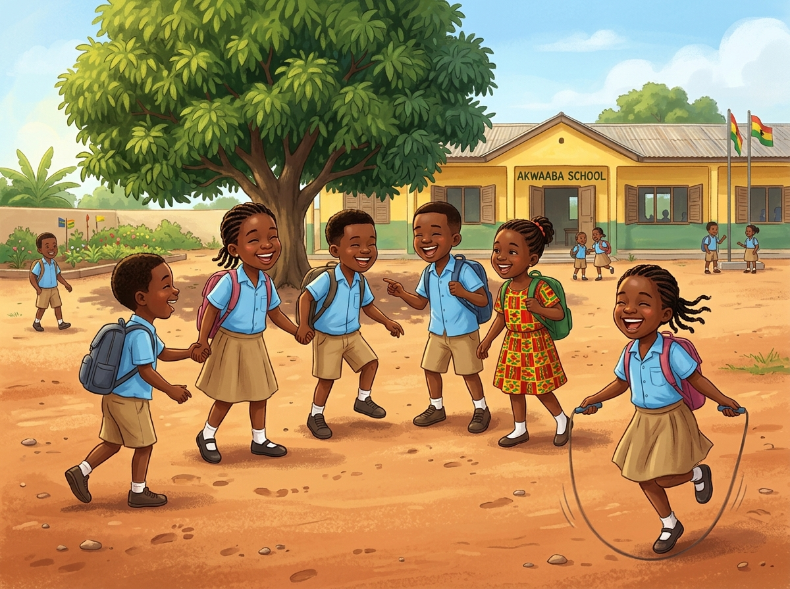